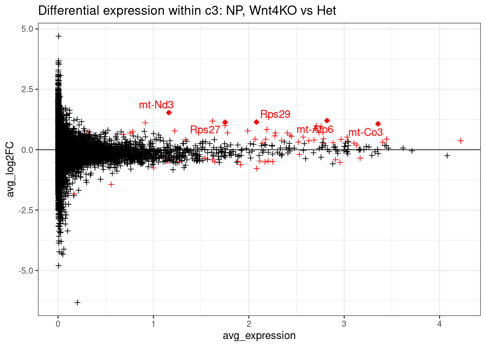
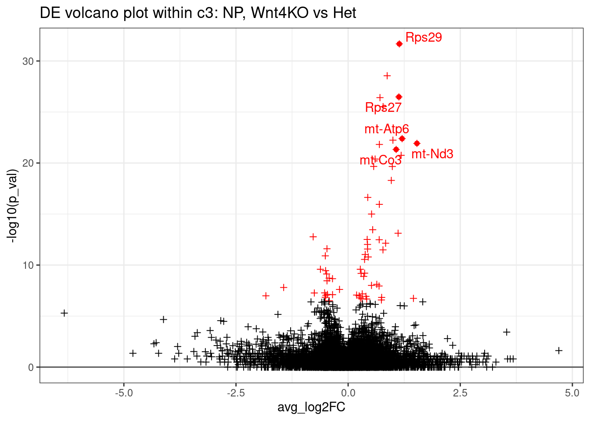
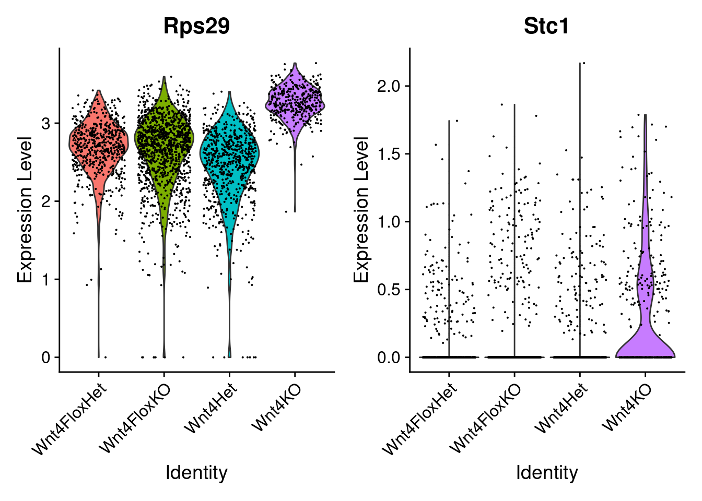
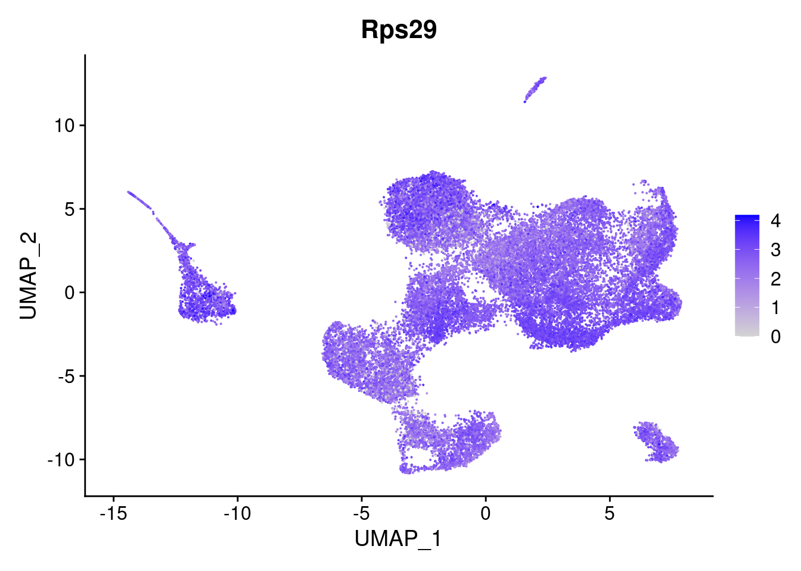
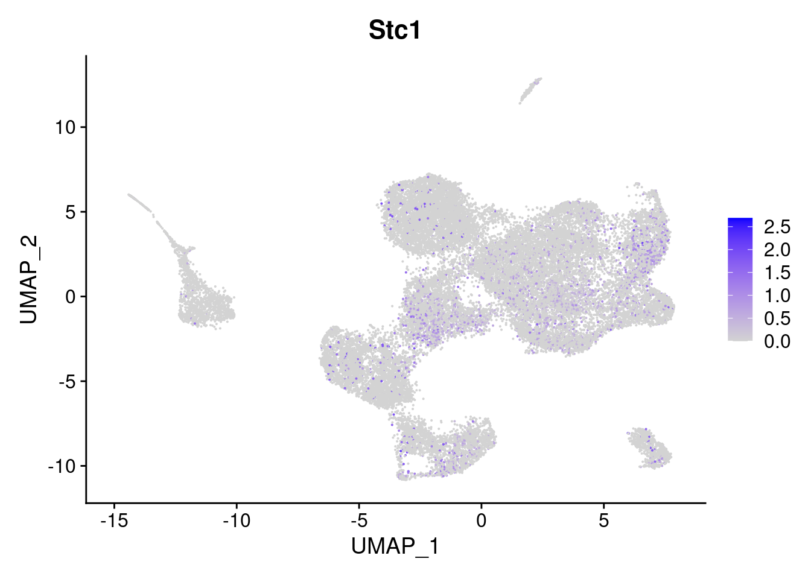
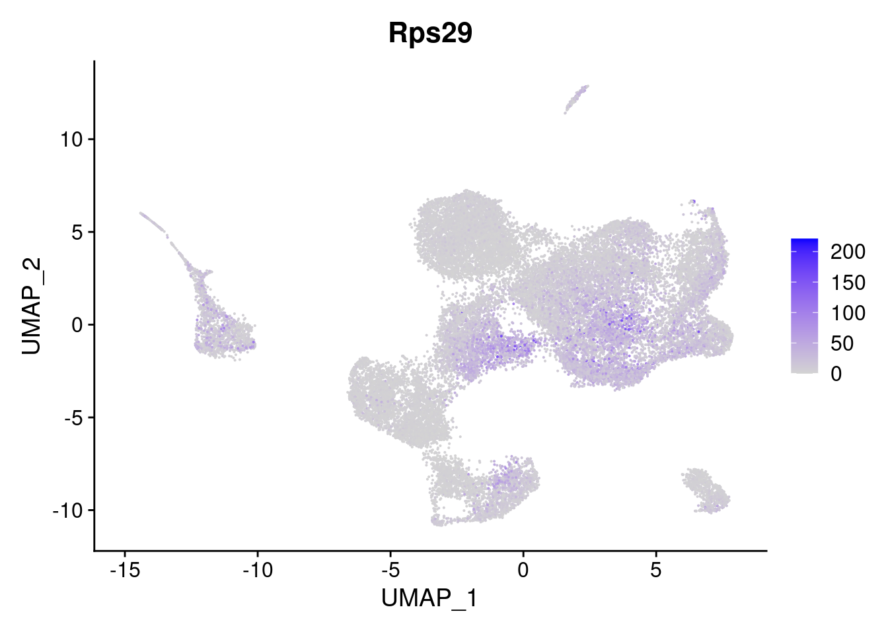
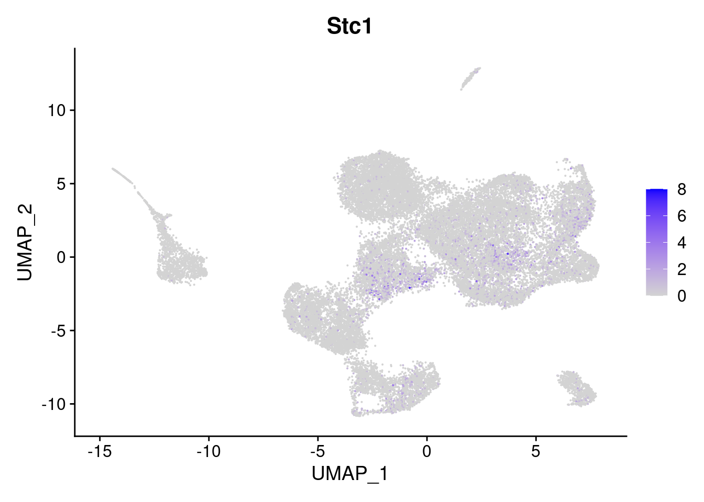
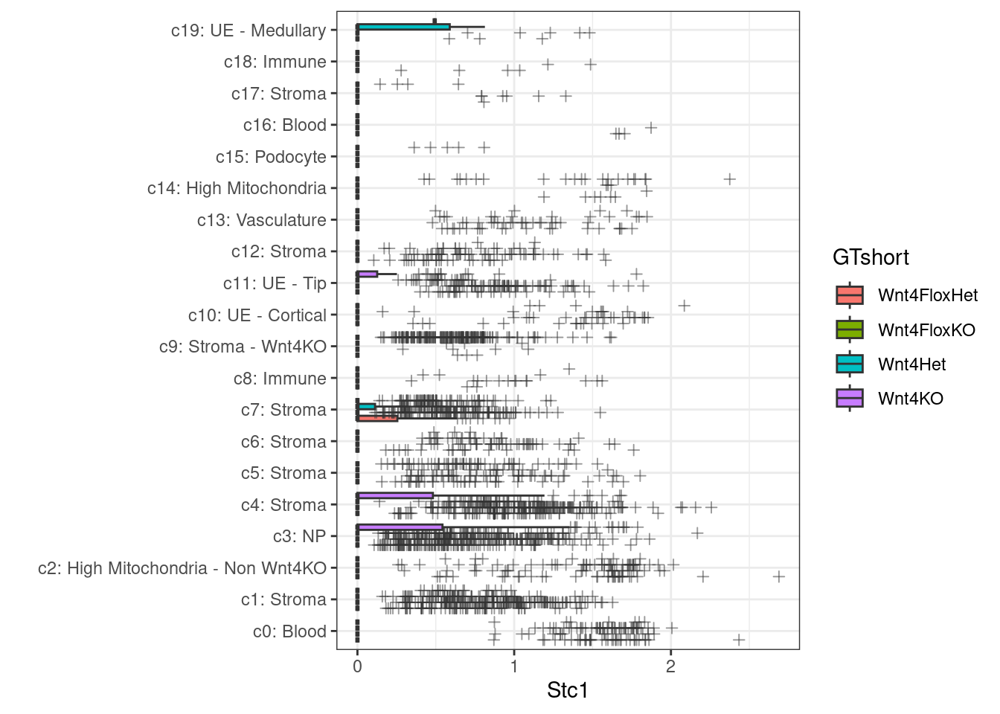

scRNAseq differential expression without replicates
Sarah Williams
Last updated: 2024-10-09
Checks: 7 0
Knit directory: spatialsnippets/
This reproducible R Markdown analysis was created with workflowr (version 1.7.1). The Checks tab describes the reproducibility checks that were applied when the results were created. The Past versions tab lists the development history.
Great! Since the R Markdown file has been committed to the Git repository, you know the exact version of the code that produced these results.
Great job! The global environment was empty. Objects defined in the global environment can affect the analysis in your R Markdown file in unknown ways. For reproduciblity it’s best to always run the code in an empty environment.
The command set.seed(20231017) was run prior to running
the code in the R Markdown file. Setting a seed ensures that any results
that rely on randomness, e.g. subsampling or permutations, are
reproducible.
Great job! Recording the operating system, R version, and package versions is critical for reproducibility.
Nice! There were no cached chunks for this analysis, so you can be confident that you successfully produced the results during this run.
Great job! Using relative paths to the files within your workflowr project makes it easier to run your code on other machines.
Great! You are using Git for version control. Tracking code development and connecting the code version to the results is critical for reproducibility.
The results in this page were generated with repository version 31da75c. See the Past versions tab to see a history of the changes made to the R Markdown and HTML files.
Note that you need to be careful to ensure that all relevant files for
the analysis have been committed to Git prior to generating the results
(you can use wflow_publish or
wflow_git_commit). workflowr only checks the R Markdown
file, but you know if there are other scripts or data files that it
depends on. Below is the status of the Git repository when the results
were generated:
Ignored files:
Ignored: .Rhistory
Ignored: .Rproj.user/
Ignored: analysis/contributions.nb.html
Ignored: analysis/e_neighbourcellchanges.nb.html
Ignored: analysis/glossary.nb.html
Ignored: renv/library/
Ignored: renv/staging/
Note that any generated files, e.g. HTML, png, CSS, etc., are not included in this status report because it is ok for generated content to have uncommitted changes.
These are the previous versions of the repository in which changes were
made to the R Markdown (analysis/e_DEWithoutReps.Rmd) and
HTML (docs/e_DEWithoutReps.html) files. If you’ve
configured a remote Git repository (see ?wflow_git_remote),
click on the hyperlinks in the table below to view the files as they
were in that past version.
| File | Version | Author | Date | Message |
|---|---|---|---|---|
| Rmd | 31da75c | swbioinf | 2024-10-09 | wflow_publish("analysis/") |
| html | b681e0d | swbioinf | 2024-10-09 | Build site. |
| Rmd | 7c61fe8 | swbioinf | 2024-10-09 | wflow_publish("analysis/") |
| html | f443580 | swbioinf | 2024-10-09 | Build site. |
| Rmd | ca62223 | swbioinf | 2024-10-09 | wflow_publish("analysis/e_DEWithoutReps.Rmd") |
| html | 87886e1 | swbioinf | 2024-10-08 | Build site. |
| Rmd | 501fbfd | swbioinf | 2024-10-08 | wflow_publish("analysis/e_DEWithoutReps.Rmd") |
| html | 41a750e | swbioinf | 2024-10-04 | Build site. |
| Rmd | eda7dac | swbioinf | 2024-10-04 | wflow_publish("analysis/e_DEWithoutReps.Rmd") |
| html | 98d7c09 | swbioinf | 2024-10-04 | Build site. |
| Rmd | c178f62 | swbioinf | 2024-10-04 | wflow_publish("analysis/e_DEWithoutReps.Rmd") |
| html | 2a0a17b | swbioinf | 2024-09-26 | Build site. |
| Rmd | 4edfd35 | swbioinf | 2024-09-26 | wflow_publish("analysis/e_DEWithoutReps.Rmd") |
| html | cd1b7ad | swbioinf | 2024-09-26 | Build site. |
| Rmd | a42f6d3 | swbioinf | 2024-09-26 | wflow_publish("analysis/e_DEWithoutReps.Rmd") |
| html | 2b1c8e2 | swbioinf | 2024-09-19 | Build site. |
| Rmd | 511594f | swbioinf | 2024-09-19 | wflow_publish("analysis/") |
| html | e7a4c12 | Sarah Williams | 2023-10-18 | Build site. |
| Rmd | 507ead4 | Sarah Williams | 2023-10-18 | wflow_publish("analysis/") |
| Rmd | 584cf73 | Sarah Williams | 2023-10-17 | adding |
| html | 584cf73 | Sarah Williams | 2023-10-17 | adding |
Overview
Sometimes there are no biological replicates, yet you still want to compare gene expression between groups. While not ideal, its possible. Individual cells may be treated as ‘replicates’ to explore the difference between two samples.
Commonly, this can be done for each cluster or celltype in your experiment. But in a single-sample pilot you could compare clusters to each other

This requires:
- Cell clusters / cell types
- 2 or more samples (or grouping to compare)
For example:
- What genes are differentially expressed between the knockout (n=1) and control(n=1), for every cell type.
- In my n=1 pilot study - what is differentially expressed between two of my stromal clusters?
This vignette describes a default approach using Seurat built-in methods. It is by no means the only way.
It’s highly recommended to check out the paper Confronting false discoveries in single-cell differential expression(Squair et al. 2021), which outlines the importance of replicates, benchmarking of different scRNAseq differenetial expression tools and common biases in results.
Not suitable for replicates
The approach described in this document is really only useful when there are no replicates - using your replicates will proved much more biologically relevant results! If you were to use this approach you will loose the individual information!
Caveat on 1 vs 1 comparisons!
Essentially the results we get will be testing the difference between this specific sample and that specific sample. The p-values for such a test can be very significant!
But those p-values can’t be compared to those using multiple samples, and we cannot tell if our results will generalise to other samples. They are likely good candidates for further work though!
But what about pooled samples?
Note that ‘pooling’ multiple unlabelled biological samples before library prep will still count as ‘one’ replicate no many how many samples are in the pool - because we have no way to tell what sample a cell comes from. A change in gene expression could be from a single outlier sample.
NB: Using cell hashing approaches to tag samples before pooling avoids this issue.
Worked example
The data for this example is from paper Forming nephrons promote nephron progenitor maintenance and branching morphogenesis via paracrine BMP4 signalling under the control of Wnt4 (Moreau et al. 2023)
This study included 10X chromium single cell RNAseq data from 4 conditions, with 3-4 E14.5 mice pooled per group.
- Sample1 (Wnt4FloxKO): Wnt4Flox/Flox Six2-Conditional Wnt4 Knockout
- Sample2 (Wnt4FloxHet): Wnt4Flox/+ Six2-Conditional Wnt4 Het
- Sample3 (Wnt4Het): Wnt4 GCE/+ Control Wnt4 Het
- Sample4 (Wnt4KO): Wnt4 GCE/GCE Knockout Wnt4
In that paper they explain that complete or conditional homozygous knockout of Wnt4 gene results in abnormal kidney development, and they use scRNAseq data to explore effects at cellular level. (moreauFormingNephronsPromote2023a?)
In this vignette, we will test for differential expression in each cell type for two 1 vs 1 comparisons:
- Wnt4KO vs Wnt4Het : Complete knockout vs heterozgote
- Wnt4FloxKO vs Wnt4FloxHet : Conditional (Flox) knockout vs heterozygote
Load Libraries and Data
library(Seurat)
library(DT)
library(tidyverse)
dataset_dir <- '~/projects/spatialsnippets/datasets'
seurat_file <- file.path(dataset_dir, 'Wnt4KO_Moreau2023', "Wnt4KOE14.5_11_ss.rds")
so <- readRDS(seurat_file)Experimental Design
In this case the sample (sample 1-4), ‘genotype’ GT effect and GT short columns are just different labels for this same groups. We will use GTshort as our ‘sample’ names throughout.
There are between 4000 and 10000 cells per sample.
select(so@meta.data, sample, Genotype, GTeffect, GTshort) %>%
as_tibble() %>%
group_by( sample, Genotype, GTeffect, GTshort) %>%
summarise(num_cells=n(), .groups = 'drop') %>%
DT::datatable()Filter
Counts per cell
A minimum-counts-per-cell threshold was already applied to this dataset (during preprocessing) so nothing to do here.
# This is plenty
min(so$nCount_RNA)[1] 1456Cells per group
How many cells are there for each celltype for each sample? If there are too few on either side of the contrast, we won’t be able to test.
How many is too few? 50 might be a good threshold. In this case however, we might consider being very permissive and allowing just 20 cells to look at some celltypes that are clearly reduced or increased in number between conditions (e.g. c9,c10,c11).
They’re interesting in this experiment, but we have to keep in mind during interpretation that results may be less reliable.
We will apply that filter later (‘min_cells_per_group’) when running the differential expression.
table(so$CelltypeCode, so$GTshort)
Wnt4FloxHet Wnt4FloxKO Wnt4Het Wnt4KO
c0: Blood 1531 567 2597 189
c1: Stroma 553 2014 750 130
c2: High Mitochondria - Non Wnt4KO 868 678 1353 69
c3: NP 587 1225 684 376
c4: Stroma 403 1088 435 283
c5: Stroma 283 587 339 511
c6: Stroma 343 841 391 32
c7: Stroma 326 672 242 330
c8: Immune 408 701 228 144
c9: Stroma - Wnt4KO 33 41 23 1383
c10: UE - Cortical 325 408 345 35
c11: UE - Tip 251 466 307 47
c12: Stroma 189 658 177 28
c13: Vasculature 295 245 227 22
c14: High Mitochondria 125 16 140 381
c15: Podocyte 61 65 49 110
c16: Blood 171 28 8 9
c17: Stroma 21 94 13 17
c18: Immune 29 59 24 6
c19: UE - Medullary 34 58 8 1What data is used to calculate differential expression?
In short - we want to run this differential expression on the normalised data (which is on a log scale), and typically that’s in the data layer of the RNA assay.
The longer explanation:
From Seurat v5, a Seruat object has mutiple assays (but usually just one, called RNA), each of which has multiple layers.
Each assay generally has some or all of the following layers:
- counts : Just the plain old counts matrix.
- data : A normalised counts matrix
- scale.data : A normalised and scaled counts matrix, which often only contains a subset of the highly variable genes. (Used for PCA e.t.c)
Depending on how you setup your object, you might instead have one set of counts/data/scale.data layers per sample. (e.g. counts.sample1, counts.sample2 …). In that case you’ll want to proceed with differential expression on a merged layer - which you can produce with the JoinLayers() function. See how that’s used in seurats v5 integration tutorial
Multiple assays come into play more often with multimodal data - a different assay per modality (RNA, ADT, e.t.c). See multimodal vigette for details.
Beware: The notation around Layers and Assays has changed between Seurat v4 and v5! Layers were called ‘slots’ before v5, and there was no concept of joining and splitting layers with different samples.
This dataset however is a little different.It was analysed with an earlier version of Seurat, and has ended up with two assays; an RNA and an SCT assay. NB: The newer seurat 5 integration workflow behaves differently now, and doesn’t make that assay like that (NB: to be confirmed).
Assays(so)[1] "RNA" "SCT"DefaultAssay(so)[1] "SCT"Alternatively the seurat summary tells us the assasy, and layers in the default assay
soAn object of class Seurat
50377 features across 29790 samples within 2 assays
Active assay: SCT (19360 features, 3000 variable features)
3 layers present: counts, data, scale.data
1 other assay present: RNA
2 dimensional reductions calculated: umap, pcaIn any case, we want the unintegrated ‘RNA’ assay for calculating differential expression, not our integrated SCT assay (This is the reccomendation of the Seurat developers, see discussion ). The between sample integration was useful for visualising the cell-cell relationships together (e.g. superimposing samples on a UMAP layout), but for differential expression, we need to look at the variation between samples.
DefaultAssay(so) <- 'RNA'
soAn object of class Seurat
50377 features across 29790 samples within 2 assays
Active assay: RNA (31017 features, 0 variable features)
2 layers present: counts, data
1 other assay present: SCT
2 dimensional reductions calculated: umap, pcaWe don’t have the normalised RNA data assay, so create it now.
so <- NormalizeData(so)Run a single differential expression test
Lets say we want to test the difference between samples Wnt4KO and Wnt4Het within Nephron progenitors (NP),
We can use Seurat’s FindMarkers function to find differential expression between two groups. Its the same method used by the convenience function FindAllMarkers used for finding celltype markers.
Bt we first need to configure our Seuruat object for use with this function. Though we can specify our layer with the slot parameter, there’s no parameter for assay in FindMarkers, you need to make sure your ‘Default’ assay is the one you want to use.
DefaultAssay(so)[1] "RNA"DefaultAssay(so) <- "RNA" # Set it to RNALikewise, there’s no parameter to specify which column of the metadata out groups may be found in. We instead set Idents()
Idents(so) <- so$GTshort
levels(Idents(so))[1] "Wnt4FloxHet" "Wnt4FloxKO" "Wnt4Het" "Wnt4KO" Now make a subset of our Seurat object that’s just the NP cells.
so.np <- subset(so, CelltypeCode == "c3: NP")
table(so$GTshort)
Wnt4FloxHet Wnt4FloxKO Wnt4Het Wnt4KO
6836 10511 8340 4103 Finally - run FindMarkers. We will stick with the default method that uses a wilcoxon rank-sum test (but to explore other tests see the seurat DE vignette.
de_result <- FindMarkers(so.np,
ident.1 = 'Wnt4KO',
ident.2 = 'Wnt4Het',
slot = 'data', # This is the default
test.use = "wilcox" # This is the default
)Check out those p-values! They’re so significant because each cell is treated as its own replicate.
DT::datatable(de_result[1:100,])Some improvements/changes can be made:
- Speed:
- Add the max.cells.per.ident parameter to subsample down to a specified maximum number of cells per group. It can be useful to set a very low number when testing (e.g 20), then a much higher one (e.g. 500, or no limit at all) for your real run.
- If Seurat suggests you install a library called presto to speed this up, do so.
- Adjust filtering:
- By default the results are filtered by a logfc.threshold of 0.1. Consider removing this threshold (set it to 0) to get stats for genes that are present but unchanging.
- min.cells.pct by default 0.01, genes with very low expression in both groups will be ignored. You can’t find differences when there is that little expression, and keeping them in makes your multiple hypothesis correction more aggressive. You might consider disabling this test if you’ve already done your one filtering. But this default is good enough.
de_result <- FindMarkers(so.np,
ident.1 = 'Wnt4KO',
ident.2 = 'Wnt4Het',
slot = 'data', # This is the default
test.use = "wilcox", # This is the default
logfc.threshold = 0,
min.pct = 0.1, # this is the default.
max.cells.per.ident = 50 # subset for speed e.g 500, 200, or even less for testing.
)Below is the same contrast with fewer cells - notice the change in p-values.
DT::datatable(de_result[1:100,])Its quite common practice, especially with so many highly significant genes (some of which have a small log2FC), to filter our results by fold change. Common thresholds are 1 (log2(2) - a doubling or halving of expression), or log2(1.5) for 1.5 fold-changes. Note that threshold is on ‘absolute’ values, so we don’t accidentally exclude downregulation; like that Wnt4 being downregulated in its knockout!
filter(de_result, abs(avg_log2FC) >= log2(2) ) %>% head(100) %>% DT::datatable()Run differential expression for every cluster
We typically want to know about changes in every cluster. This can make for a lot of contrasts!
2x comparisons * 19x clusters = 38 sets of differential results We can simply loop through and run them one-by-one. The code below makes a big table of all the tests - recording which contrast was being done in which cluster.
NB: Note that the FindMarkers() function returns a table with feature names as a rowname. Rownames are expected to be unique. So while that is fine for one comparison, but when we want to put more together, we need to give it its own column. If we don’t, there’ll be gene names with ‘.1’ appended to the end!
# Set threhoehsolds
min_cells_per_group <- 20
# Calculate DE across every celltype
# Empty list to collect results
de_result_list <- list()
de_result_sig_list <- list()
# the contrasts
# If we store them in a list we can give the nice names
contrast_list <- list( # 'Test' vs 'control'
FloxWnt4KOvsFloxHet = c('Wnt4FloxKO', 'Wnt4FloxHet' ) ,
TotalWnt4KOvsHet = c('Wnt4KO', 'Wnt4Het' ) )
## Or you could autogenerated them
#make_contrast_name <- function(contrast_parts){ paste0(contrast_parts[1],"vs",contrast_parts[1])}
#contrast_names <- sapply(FUN=make_contrast_name, X=contrast_list)
#names(contrast_list) <- contrast_names
# Loop through every celltype/cluster
for (the_celltype in levels(so$CelltypeCode)) {
# Subset to one cell type.
print(the_celltype)
so.this <- subset(so, CelltypeCode == the_celltype)
# count how many cells within each sample (GTshort)
# And list which samples have more than the minimum
cells_per_sample <- table(so.this$GTshort)
print(cells_per_sample)
samples_with_enough_cells <- names(cells_per_sample)[cells_per_sample > min_cells_per_group]
## Loop through every contrast
# For each listed contrast, do both sides of the contrast have enough cells?
# This is of course much simpler if you only have one contrast!
for (contrast_name in names(contrast_list)) {
# from mycontrastname pull out list of the two samples involved;
# c('test', 'control')
contrast <- contrast_list[[contrast_name]]
# Only run this contrast if both sides pass!
if (all(contrast %in% samples_with_enough_cells)) {
print(contrast_name)
# We need to tell Seurat to group by _sample_ not cluster.
Idents(so.this) <- so.this$GTshort
de_result <- FindMarkers(so.this,
ident.1 = contrast[1],
ident.2 = contrast[2],
slot = 'data',
test.use = "wilcox", # the default
min.pct = 0.01, # Note
logfc.threshold = 0,
max.cells.per.ident = 100 # 1000 # if you have really big clusters, set this to subsample!
)
# It can be helpful to know the average expression of a gene
# This will give us the average (per cell) within this celltype.
avg_expression <- rowMeans(GetAssayData(so.this, assay = 'SCT', layer="data"))
de_result.formatted <- de_result %>%
rownames_to_column("target") %>%
mutate(contrast=contrast_name,
celltype=the_celltype,
avg_expression=avg_expression[target]) %>%
select(celltype,contrast,target,avg_expression, everything()) %>%
arrange(p_val)
# Filter to just significant results, optionally by log2FC.
de_result.sig <- filter(de_result.formatted,
p_val_adj < 0.01,
abs(avg_log2FC) >= log2(1.5) )
# Record these results in a list to combine
full_name <- paste(contrast_name, the_celltype)
de_result_list[[full_name]] <- de_result.formatted
de_result_sig_list[[full_name]] <- de_result.sig
}
}
}[1] "c0: Blood"
Wnt4FloxHet Wnt4FloxKO Wnt4Het Wnt4KO
1531 567 2597 189
[1] "FloxWnt4KOvsFloxHet"
[1] "TotalWnt4KOvsHet"
[1] "c1: Stroma"
Wnt4FloxHet Wnt4FloxKO Wnt4Het Wnt4KO
553 2014 750 130
[1] "FloxWnt4KOvsFloxHet"
[1] "TotalWnt4KOvsHet"
[1] "c2: High Mitochondria - Non Wnt4KO"
Wnt4FloxHet Wnt4FloxKO Wnt4Het Wnt4KO
868 678 1353 69
[1] "FloxWnt4KOvsFloxHet"
[1] "TotalWnt4KOvsHet"
[1] "c3: NP"
Wnt4FloxHet Wnt4FloxKO Wnt4Het Wnt4KO
587 1225 684 376
[1] "FloxWnt4KOvsFloxHet"
[1] "TotalWnt4KOvsHet"
[1] "c4: Stroma"
Wnt4FloxHet Wnt4FloxKO Wnt4Het Wnt4KO
403 1088 435 283
[1] "FloxWnt4KOvsFloxHet"
[1] "TotalWnt4KOvsHet"
[1] "c5: Stroma"
Wnt4FloxHet Wnt4FloxKO Wnt4Het Wnt4KO
283 587 339 511
[1] "FloxWnt4KOvsFloxHet"
[1] "TotalWnt4KOvsHet"
[1] "c6: Stroma"
Wnt4FloxHet Wnt4FloxKO Wnt4Het Wnt4KO
343 841 391 32
[1] "FloxWnt4KOvsFloxHet"
[1] "TotalWnt4KOvsHet"
[1] "c7: Stroma"
Wnt4FloxHet Wnt4FloxKO Wnt4Het Wnt4KO
326 672 242 330
[1] "FloxWnt4KOvsFloxHet"
[1] "TotalWnt4KOvsHet"
[1] "c8: Immune"
Wnt4FloxHet Wnt4FloxKO Wnt4Het Wnt4KO
408 701 228 144
[1] "FloxWnt4KOvsFloxHet"
[1] "TotalWnt4KOvsHet"
[1] "c9: Stroma - Wnt4KO"
Wnt4FloxHet Wnt4FloxKO Wnt4Het Wnt4KO
33 41 23 1383
[1] "FloxWnt4KOvsFloxHet"
[1] "TotalWnt4KOvsHet"
[1] "c10: UE - Cortical"
Wnt4FloxHet Wnt4FloxKO Wnt4Het Wnt4KO
325 408 345 35
[1] "FloxWnt4KOvsFloxHet"
[1] "TotalWnt4KOvsHet"
[1] "c11: UE - Tip"
Wnt4FloxHet Wnt4FloxKO Wnt4Het Wnt4KO
251 466 307 47
[1] "FloxWnt4KOvsFloxHet"
[1] "TotalWnt4KOvsHet"
[1] "c12: Stroma"
Wnt4FloxHet Wnt4FloxKO Wnt4Het Wnt4KO
189 658 177 28
[1] "FloxWnt4KOvsFloxHet"
[1] "TotalWnt4KOvsHet"
[1] "c13: Vasculature"
Wnt4FloxHet Wnt4FloxKO Wnt4Het Wnt4KO
295 245 227 22
[1] "FloxWnt4KOvsFloxHet"
[1] "TotalWnt4KOvsHet"
[1] "c14: High Mitochondria"
Wnt4FloxHet Wnt4FloxKO Wnt4Het Wnt4KO
125 16 140 381
[1] "TotalWnt4KOvsHet"
[1] "c15: Podocyte"
Wnt4FloxHet Wnt4FloxKO Wnt4Het Wnt4KO
61 65 49 110
[1] "FloxWnt4KOvsFloxHet"
[1] "TotalWnt4KOvsHet"
[1] "c16: Blood"
Wnt4FloxHet Wnt4FloxKO Wnt4Het Wnt4KO
171 28 8 9
[1] "FloxWnt4KOvsFloxHet"
[1] "c17: Stroma"
Wnt4FloxHet Wnt4FloxKO Wnt4Het Wnt4KO
21 94 13 17
[1] "FloxWnt4KOvsFloxHet"
[1] "c18: Immune"
Wnt4FloxHet Wnt4FloxKO Wnt4Het Wnt4KO
29 59 24 6
[1] "FloxWnt4KOvsFloxHet"
[1] "c19: UE - Medullary"
Wnt4FloxHet Wnt4FloxKO Wnt4Het Wnt4KO
34 58 8 1
[1] "FloxWnt4KOvsFloxHet"# Join together results for all celltypes, and pull out those with a singificant adjusted p-value
de_results_all <- bind_rows(de_result_list)
de_results_sig <- bind_rows(de_result_sig_list)Check out the full set of significant DE genes
DT::datatable(de_results_sig)Save the results.
# Save the full set of results as a tab-deliminated text file.
# This is useful for parsing later e.g. for functional enrichment
write_tsv(x = de_results_all, "~/myproject/de_results_all.tsv")
# If you don't have too many contrasts and celltypes,
# you can save it as an excel file, with each contrast in a seprate tab.
# In this canse, excel can't have ':'symbols in the sheet names (which are drawn from the list names), so we replace them.
# Also consider keeping names short, use a cluster code instead of cell type.
library(writexl)
de_result_list.excel <- setNames(de_result_list, nm=gsub(": ","_",names(de_result_list)))
de_result_sig_list.excel <- setNames(de_result_sig_list, nm=gsub(": ","_",names(de_result_sig_list)))
write_xlsx(de_result_list.excel, "~/myproject/de_results_all.xlsx")
write_xlsx(de_result_sig_list.excel, "~/myproject/de_results_sig.xlsx")Visualising DE results
Contrast level visualisation
Lets get some contrast-level visualisations of our differential expression results.
library(ggrepel) #library for non-overlapping plot text
# Get the results of Wnt4KO vs Het , within the c6 Stromal cluster.
de_result <- filter(de_results_all, celltype == "c3: NP", contrast == "TotalWnt4KOvsHet")
# Would like to show a few genes on the plot - the top 5 most significant with 2-fold change.
top5_genes.2fc <- arrange(de_result, p_val_adj) %>% filter( abs(avg_log2FC ) > 1) %>% head(n=5)ggplot(de_result, aes(x=avg_expression, y=avg_log2FC, col=p_val_adj < 0.01)) +
geom_hline(yintercept = 0, col='grey30') +
geom_point(pch=3) +
geom_point(data=top5_genes.2fc) +
geom_text_repel(data=top5_genes.2fc, mapping=aes(label=`target`)) +
scale_colour_manual(values=c('FALSE'='black', 'TRUE'= 'red')) +
theme_bw() +
theme(legend.position = "None") +
ggtitle("Differential expression within c3: NP, Wnt4KO vs Het")
| Version | Author | Date |
|---|---|---|
| f443580 | swbioinf | 2024-10-09 |
And a volcano plot
ggplot(de_result, aes(x=avg_log2FC, y=-log10(p_val) ,col=p_val_adj < 0.01)) +
geom_hline(yintercept = 0, col='grey30') +
geom_point(pch=3) +
geom_point(data=top5_genes.2fc) +
geom_text_repel(data=top5_genes.2fc, mapping=aes(label=`target`)) +
scale_colour_manual(values=c('FALSE'='black', 'TRUE'= 'red')) +
theme_bw() +
theme(legend.position = "None") +
ggtitle("DE volcano plot within c3: NP, Wnt4KO vs Het")
Plot some individual genes
For the above differential expression, there were alot of ribosomal and mitochondrial genes listed as differentially expressed. This can occur because they generally have high expression, therefore high statistical power to detect even small changes. These aren’t neccessarily the most interesting genes in the experiment.
It is worth plotting the expression of individual genes of particular interest, particuarly if you’re planning downstream work! Plotting two of these results below.
- Rps29 : The most significantly DE gene (adjusted pval 6.5 * 10^-28)
- Stc1 : At an average expression of 0.0926, log2FC of 1.5 and a p-value of 0.0057, its much less statiticaly confident, but might be interesting experimentally
# for plotting, make a subset with just that cluster
so.cluster <- subset(so, CelltypeCode == 'c3: NP')
# Subset the results
de_result.sig <- filter(de_results_all,
celltype == "c3: NP",
contrast == "TotalWnt4KOvsHet",
p_val_adj <= 0.01
)
DT::datatable(filter(de_result.sig, p_val_adj < 0.01))First step would be a violin plot. Rps29 has very high expresison, and is in practically every cell. Stc1 is more typical low expression, but still quite informative. The black line at the bottom of these violin plots is typical - that’s cells with zero copies of the gene dominating the plot.
VlnPlot(so.cluster, features=c('Rps29', 'Stc1'))
| Version | Author | Date |
|---|---|---|
| f443580 | swbioinf | 2024-10-09 |
Normalised expression across the umap can give a good overview of how specific your DE gene is expressed. Can see that there’s alot more expression of Rps29 overall, and its pretty ubiquitous.
FeaturePlot(so, features='Rps29') 
FeaturePlot(so, features='Stc1')
| Version | Author | Date |
|---|---|---|
| f443580 | swbioinf | 2024-10-09 |
It can also be worth checking how high counts are - note that Stc1 maxes out at 8 copies in a cell. Rps29 looks more specific now - but many of the low counts are in the grey (This isn’t a good visualisation, its just for checking counts).
FeaturePlot(so, features='Rps29', slot = 'counts')
FeaturePlot(so, features='Stc1', slot = 'counts')
If the Seurat default plots aren’t giving enough control for plotting your experiment; The ‘fetchData’ function builds a table from the various sources in the seurat data (since gene expression or UMAP coordinates arne’t in the metadata). You can build your own pretty plots from there.
plottable <-
FetchData(so, c('GTshort', 'CelltypeCode', # From metadata table
'UMAP_1','UMAP_2', # From dimensional reductions
'Rps29','Stc1' # Genes from default assay
),
slot = 'data' #layer to get (slot is pre seurat 5 termnology)
)
head(plottable) GTshort CelltypeCode UMAP_1
S1_AAACCCACAAGGTTGG Wnt4FloxKO c2: High Mitochondria - Non Wnt4KO -4.5556949
S1_AAACCCACACCTCTGT Wnt4FloxKO c8: Immune -12.0080126
S1_AAACCCACAGGGCTTC Wnt4FloxKO c4: Stroma 5.9303346
S1_AAACCCAGTTAGGACG Wnt4FloxKO c1: Stroma 0.8406711
S1_AAACCCAGTTGACTGT Wnt4FloxKO c11: UE - Tip -1.4513678
S1_AAACCCAGTTGTCCCT Wnt4FloxKO c1: Stroma 2.0917211
UMAP_2 Rps29 Stc1
S1_AAACCCACAAGGTTGG -3.57434729 2.095264 0
S1_AAACCCACACCTCTGT -0.05614393 1.972429 0
S1_AAACCCACAGGGCTTC 3.14180413 1.385021 0
S1_AAACCCAGTTAGGACG 2.14208197 2.134845 0
S1_AAACCCAGTTGACTGT -10.38371904 2.696576 0
S1_AAACCCAGTTGTCCCT 1.97180467 2.897872 0Get some finer control on a UMAP plot.
ggplot(plottable, aes(x=UMAP_1, y=UMAP_2, col=Stc1)) +
geom_point(pch=3) +
theme_bw() +
scale_colour_viridis_c(direction=-1) +
facet_wrap(~GTshort)
| Version | Author | Date |
|---|---|---|
| f443580 | swbioinf | 2024-10-09 |
A compact view of gene expression across all clusters (is the change specific to a cluster, or global?)
ggplot(plottable, aes(x=CelltypeCode, y=Stc1, fill=GTshort)) +
geom_boxplot( outlier.alpha = .5, outlier.shape = 3) +
xlab("") +
coord_flip() +
theme_bw() 
Code Snippet
The following code assumes your seruat object is called so, and has the following metadata columns;
- cluster : The cluster or celltype
- samplename: The samples to compare (n=1). For the snippet, these are called ‘Test’ and ‘Control’
Update as needed.
# Libraries
library(Seurat)
library(tidyverse)
library(writexl)
# Ensure that relevant metadata are set as factors
so$samplename <- factor(so$samplename) # levels are 'Test' and 'Control'
so$cluster <- factor(so$cluster)
## Set default assay
DefaultAssay(so) <- "RNA"
## Set thresholds
min_cells_per_group <- 20 # Skip comparisons, when fewer than this many cells in one side of the comparison.
p_value_threshold <- 0.01 # threshold for significance (after correction)
log_fc_threshold <- 0 # threshold for sitnificange (0=none), log2(1.5), log2(2) also options.
## Define contrasts
# Note this is a list of pairs of samplenames from 'samplename' column.
# There can be multiple contrasts.
# This will build names for each contrast
contrast_list <- list(c('Test','Control'))
make_contrast_name <- function(contrast_parts){paste0(contrast_parts[1],"vs",contrast_parts[1])}
contrast_names <- sapply(FUN=make_contrast_name, X=contrast_list)
names(contrast_list) <- contrast_names
## Prepare empty lists to store results.
de_result_list <- list()
de_result_sig_list <- list()
## Loop through each cluster / celltype
for (the_celltype in levels(so$cluster)) {
## Subset to the cluster/celltype
print(the_celltype)
so.this <- subset(so, CelltypeCode == the_celltype)
# Count how many cells within each sample
# And list which samples have more than the minimum
cells_per_sample <- table(so.this$samplename)
print(cells_per_sample)
samples_with_enough_cells <- names(cells_per_sample)[cells_per_sample > min_cells_per_group]
## Loop through every contrast
# For each listed contrast, do both sides of the contrast have enough cells?
# This is of course much simpler if you only have one contrast!
for (contrast_name in names(contrast_list)) {
# from contrast list pull out list of the two samples involved;
# contrast_name is 'TestvsControl'
# c('Test', 'Control')
contrast <- contrast_list[[contrast_name]]
# Only run this contrast if both sides pass!
if (all(contrast %in% samples_with_enough_cells)) {
print(contrast_name)
# We need to tell Seurat to group by _sample_ not cluster.
Idents(so.this) <- so.this$samplename
# Finally, calculate the DE!
de_result <- FindMarkers(so.this,
ident.1 = contrast[1],
ident.2 = contrast[2],
slot = 'data',
test.use = "wilcox", # the default
min.pct = 0.01, # Note
logfc.threshold = 0, # Report all, filter later
max.cells.per.ident = 500 # Optional - if you have really big clusters, set this to subsample!
)
# It can be helpful to know the average expression of a gene
# This will give us the average (per cell) within this cluster.
avg_expression <- rowMeans(GetAssayData(so.this, assay = 'RNA', layer="data"))
# Format the results with extra info, record the contrast run.
de_result.formatted <- de_result %>%
rownames_to_column("target") %>%
mutate(contrast=contrast_name,
celltype=the_celltype,
avg_expression=avg_expression[target]) %>%
select(celltype,contrast,target,avg_expression, everything()) %>%
arrange(p_val)
# Filter to just significant results, optionally by log2FC.
de_result.sig <- filter(de_result.formatted,
p_val_adj < p_value_threshold,
abs(avg_log2FC) >= log_fc_threshold )
# Record these results in a list
full_name <- paste(contrast_name, the_celltype)
de_result_list[[full_name]] <- de_result.formatted
de_result_sig_list[[full_name]] <- de_result.sig
}
}
}
# And combine all and significant results into two big tables.
de_results_all <- bind_rows(de_result_list)
de_results_sig <- bind_rows(de_result_sig_list)
# Save the full set of results as a tab-deliminated text file
# for processing, and excel files for browsing.
write_tsv(de_results_all, "~/myproject/de_results_all.tsv")
write_xlsx(de_result_list, "~/myproject/de_results_all.xlsx")
write_xlsx(de_result_sig_list, "~/myproject/de_results_sig.xlsx")Results
DT::datatable(de_result.sig)- celltype: The cluster or celltype the contrat is within. Added by running code.
- contrast: The name of what is being compared. Added by running code.
- target : Gene name. (NB: Added by our running code, in the direct output of FindMarkers(), these are row names instead)
- avg_expression : Average expression of target within celltype group. (Added by running code)
- p_val : P value without multiple hypothesis correction - see p_val_adj
- avg_log2FC : Average log 2 fold change of the comparison. Is calculated as: log2(test expression) - log2(control expression) A value of 0 represents no change, +1 is a doubling, and -1 is a halving of expression.
- pct.1 : Percent of cells in group 1 (generally test) that express the gene at all.
- pct.2 : Percent of cells in group 2 (generally control/WT/reference) that express the gene at all.
- p_val_adj : Pvalue with multiple hypothesis correction. This may be used for filtering.
More information
List of useful resources. Papers, vignettes, pertinent forum posts
- Wnt4 KO in developing mouse kidney - 10X Chromium scRNAseq: Forming nephrons promote nephron progenitor maintenance and branching morphogenesis via paracrine BMP4 signalling under the control of Wnt4 (moreauFormingNephronsPromote2023a?) : The paper with this data.
- Confronting false discoveries in single-cell differential expression(squairConfrontingFalseDiscoveries2021?) : This is an excellent paper benchmarking and exploring differental expression methods for single cell expression data.
- Seurat Differential Expression Vignette : How to do differential expression with the seurat package. Tells you how to use the multiple statistical tests that seurat offers.
- OSCA Differntial Expression: The excellent book Orchestrating single cell analysis includes a section on differential expression, it focusses on pseuboulk approaches with replicates (which can’t be used for a 1 vs 1) using the bioconductor toolkit, but provides useful background.
- ‘The Seurat Object’ in scRNAseq analysis with R Small section of this document ‘the Seurat object’ has some explanation of the seurat object format.
Refereneces
sessionInfo()R version 4.3.2 (2023-10-31)
Platform: x86_64-pc-linux-gnu (64-bit)
Running under: Ubuntu 22.04.5 LTS
Matrix products: default
BLAS: /usr/lib/x86_64-linux-gnu/openblas-pthread/libblas.so.3
LAPACK: /usr/lib/x86_64-linux-gnu/openblas-pthread/libopenblasp-r0.3.20.so; LAPACK version 3.10.0
locale:
[1] LC_CTYPE=en_AU.UTF-8 LC_NUMERIC=C
[3] LC_TIME=en_AU.UTF-8 LC_COLLATE=en_AU.UTF-8
[5] LC_MONETARY=en_AU.UTF-8 LC_MESSAGES=en_AU.UTF-8
[7] LC_PAPER=en_AU.UTF-8 LC_NAME=C
[9] LC_ADDRESS=C LC_TELEPHONE=C
[11] LC_MEASUREMENT=en_AU.UTF-8 LC_IDENTIFICATION=C
time zone: Etc/UTC
tzcode source: system (glibc)
attached base packages:
[1] stats graphics grDevices datasets utils methods base
other attached packages:
[1] ggrepel_0.9.5 lubridate_1.9.3 forcats_1.0.0 stringr_1.5.1
[5] dplyr_1.1.4 purrr_1.0.2 readr_2.1.5 tidyr_1.3.1
[9] tibble_3.2.1 ggplot2_3.5.0 tidyverse_2.0.0 DT_0.33
[13] Seurat_5.1.0 SeuratObject_5.0.2 sp_2.1-3 workflowr_1.7.1
loaded via a namespace (and not attached):
[1] RColorBrewer_1.1-3 rstudioapi_0.16.0 jsonlite_1.8.8
[4] magrittr_2.0.3 spatstat.utils_3.0-4 farver_2.1.1
[7] rmarkdown_2.26 fs_1.6.3 vctrs_0.6.5
[10] ROCR_1.0-11 spatstat.explore_3.2-7 htmltools_0.5.8.1
[13] sass_0.4.9 sctransform_0.4.1 parallelly_1.37.1
[16] KernSmooth_2.23-22 bslib_0.7.0 htmlwidgets_1.6.4
[19] ica_1.0-3 plyr_1.8.9 plotly_4.10.4
[22] zoo_1.8-12 cachem_1.0.8 whisker_0.4.1
[25] igraph_2.0.3 mime_0.12 lifecycle_1.0.4
[28] pkgconfig_2.0.3 Matrix_1.6-5 R6_2.5.1
[31] fastmap_1.1.1 fitdistrplus_1.1-11 future_1.33.2
[34] shiny_1.8.1.1 digest_0.6.35 colorspace_2.1-0
[37] patchwork_1.2.0 ps_1.7.6 rprojroot_2.0.4
[40] tensor_1.5 RSpectra_0.16-1 irlba_2.3.5.1
[43] crosstalk_1.2.1 labeling_0.4.3 progressr_0.14.0
[46] timechange_0.3.0 fansi_1.0.6 spatstat.sparse_3.0-3
[49] httr_1.4.7 polyclip_1.10-6 abind_1.4-5
[52] compiler_4.3.2 withr_3.0.0 fastDummies_1.7.3
[55] highr_0.10 MASS_7.3-60.0.1 tools_4.3.2
[58] lmtest_0.9-40 httpuv_1.6.15 future.apply_1.11.2
[61] goftest_1.2-3 glue_1.7.0 callr_3.7.6
[64] nlme_3.1-164 promises_1.2.1 grid_4.3.2
[67] Rtsne_0.17 getPass_0.2-4 cluster_2.1.6
[70] reshape2_1.4.4 generics_0.1.3 gtable_0.3.4
[73] spatstat.data_3.0-4 tzdb_0.4.0 hms_1.1.3
[76] data.table_1.15.4 utf8_1.2.4 spatstat.geom_3.2-9
[79] RcppAnnoy_0.0.22 RANN_2.6.1 pillar_1.9.0
[82] limma_3.58.1 spam_2.10-0 RcppHNSW_0.6.0
[85] later_1.3.2 splines_4.3.2 lattice_0.22-6
[88] renv_1.0.5 survival_3.5-8 deldir_2.0-4
[91] tidyselect_1.2.1 miniUI_0.1.1.1 pbapply_1.7-2
[94] knitr_1.45 git2r_0.33.0 gridExtra_2.3
[97] scattermore_1.2 xfun_0.43 statmod_1.5.0
[100] matrixStats_1.2.0 stringi_1.8.3 lazyeval_0.2.2
[103] yaml_2.3.8 evaluate_0.23 codetools_0.2-20
[106] BiocManager_1.30.22 cli_3.6.2 uwot_0.1.16
[109] xtable_1.8-4 reticulate_1.35.0 munsell_0.5.1
[112] processx_3.8.4 jquerylib_0.1.4 Rcpp_1.0.12
[115] globals_0.16.3 spatstat.random_3.2-3 png_0.1-8
[118] parallel_4.3.2 presto_1.0.0 dotCall64_1.1-1
[121] listenv_0.9.1 viridisLite_0.4.2 scales_1.3.0
[124] ggridges_0.5.6 leiden_0.4.3.1 rlang_1.1.3
[127] cowplot_1.1.3